Le métal sur mesure, soudé et posé par Alexandre.
Garde-corps, portails, escaliers et tuyauterie inox. Ferronnier et soudeur agréé TIG à Saint-Nicolas, pour toute la région liégeoise.
De quoi avez-vous besoin ? Envoyez une photo, Alexandre vous répond.
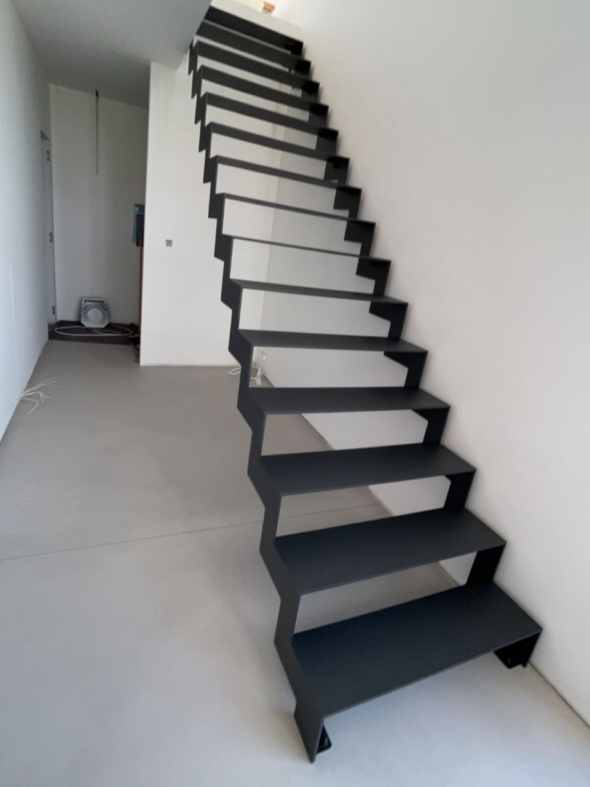
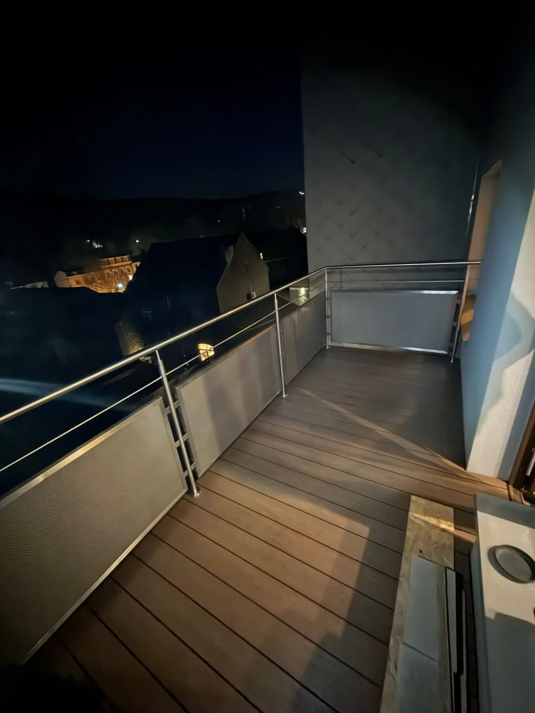
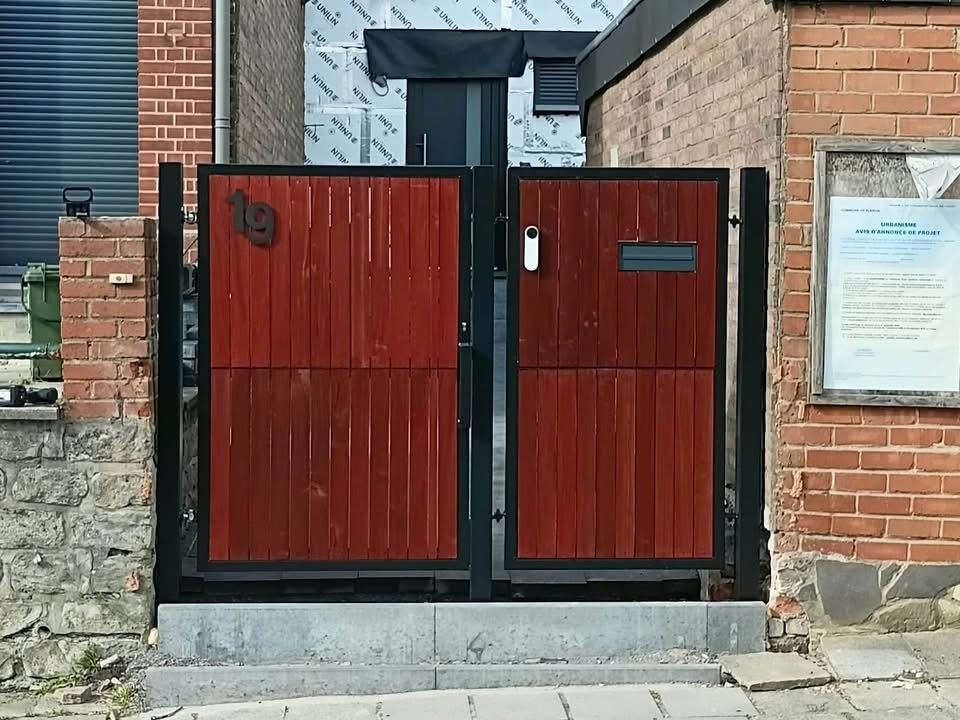
- 10 ans de soudure industrielle
- Certifié VCA, passeports Prayon, ArcelorMittal, Aperam
- Un seul interlocuteur, du devis à la pose
- Atelier à Saint-Nicolas, région liégeoise
Ce que je fabrique
Acier, inox et autres métaux. Chaque pièce est mesurée, soudée, finie et posée par la même personne.
-
Garde-corps & rampes
Balcons, trémies, terrasses, barres d'appui. Inox, verre ou acier, lignes droites ou motifs dessinés.
-
Portails & portes
Portails battants ou pleins, portillons, portes vitrées style atelier, portes de sécurité.
-
Escaliers & sur mesure
Escaliers à limon central ou en tôle pliée, range-bûches, plaques inox, réparations.
-
Tuyauterie industrielle
Lignes acier et inox à brides, plateformes, supports. TIG, MIG/MAG et arc, en atelier ou sur site.
Réalisations
Des chantiers récents, photographiés sur place. Choisissez une catégorie, faites défiler, touchez une photo pour l'agrandir.
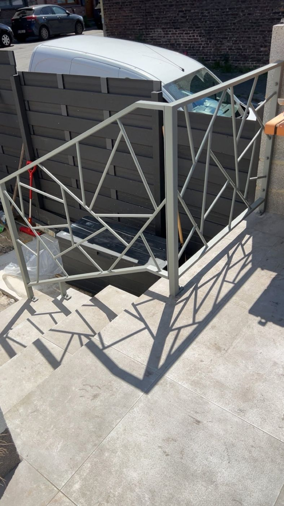
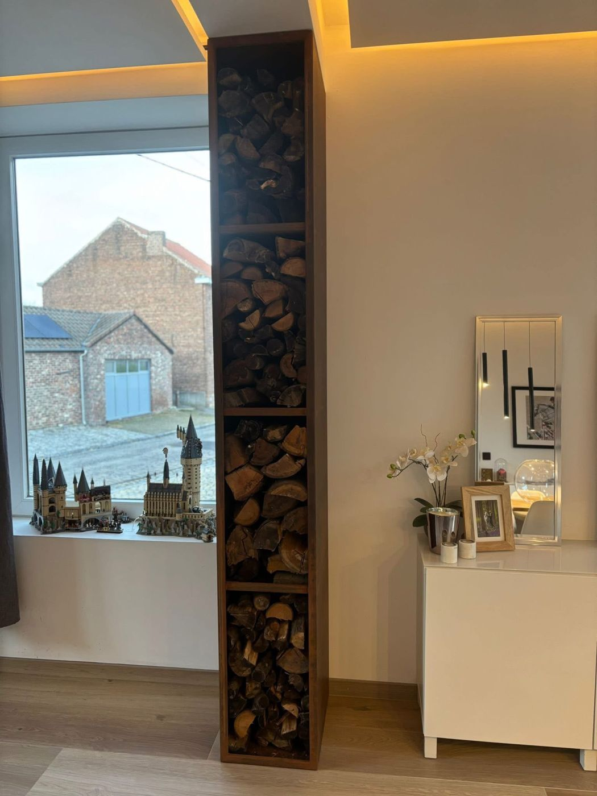
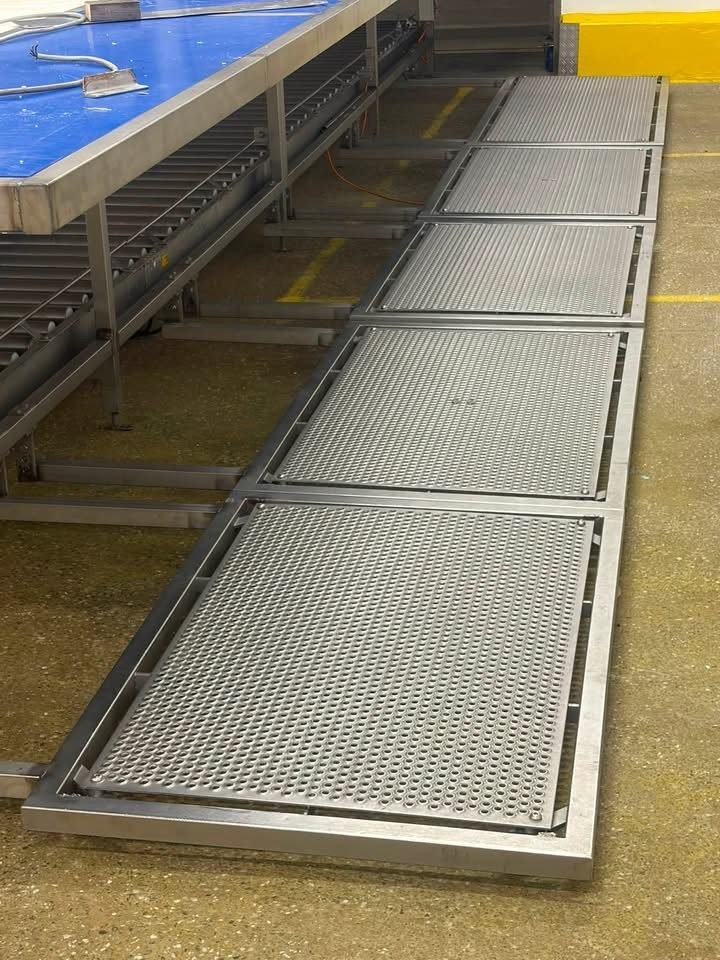
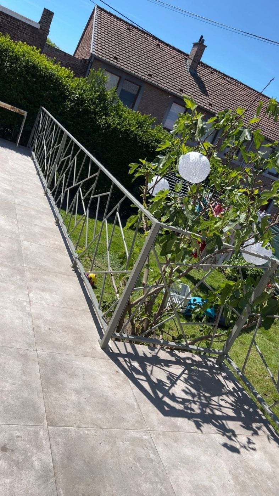
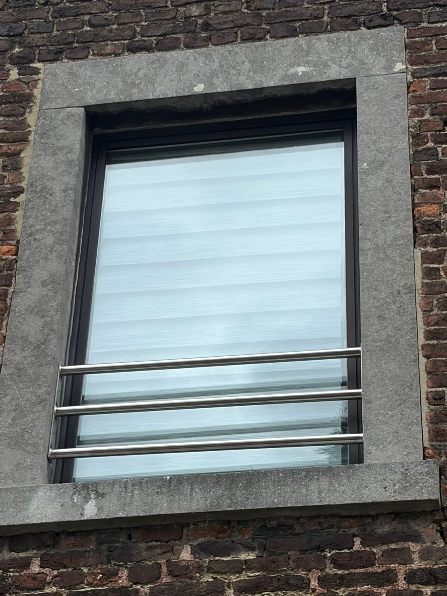
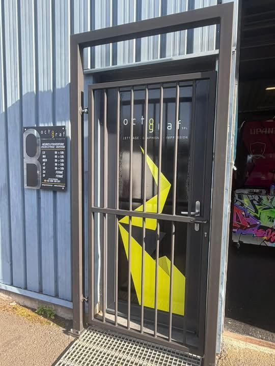
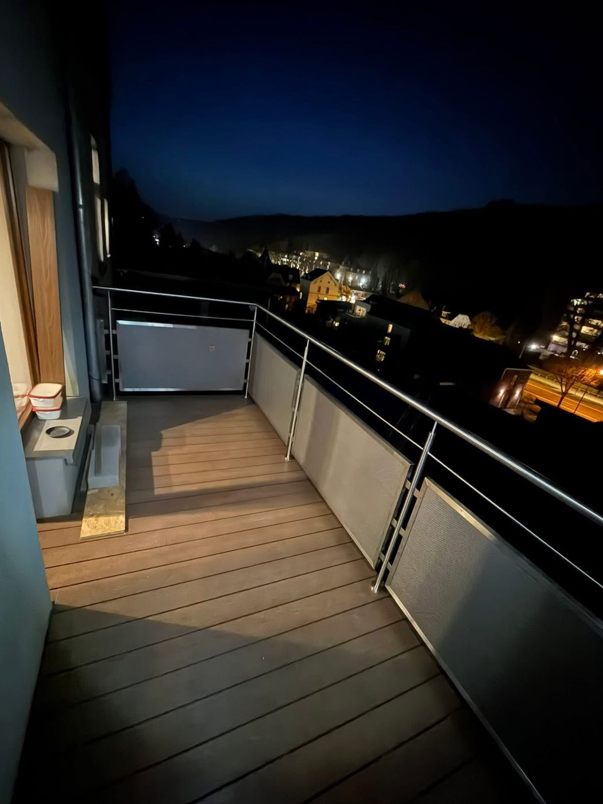
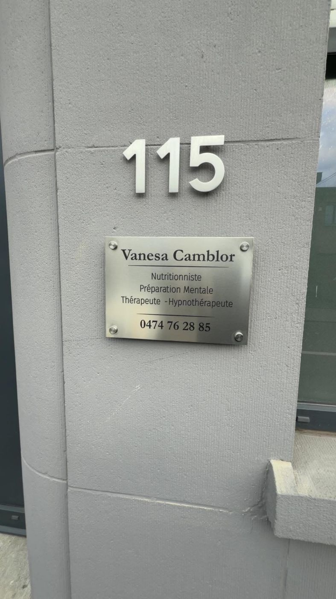
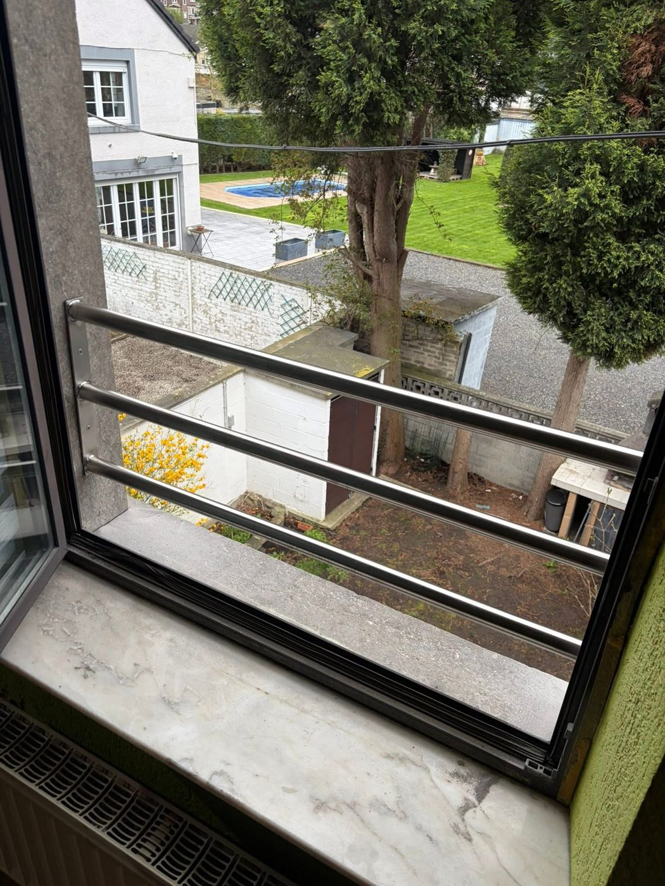
D'autres chantiers sont publiés chaque semaine sur la page Facebook.
Avant / après
Même endroit, avant et après le passage de Metalex. Faites glisser le curseur.
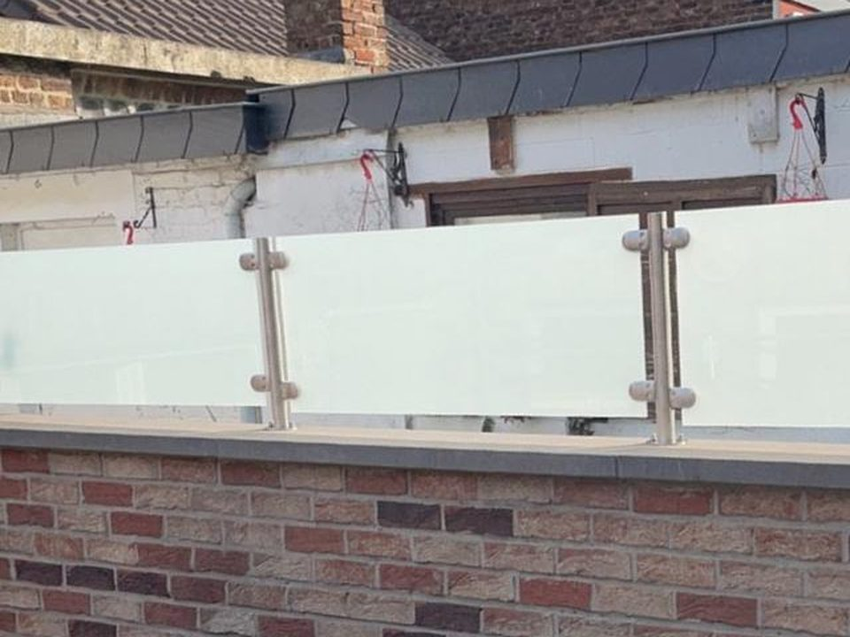
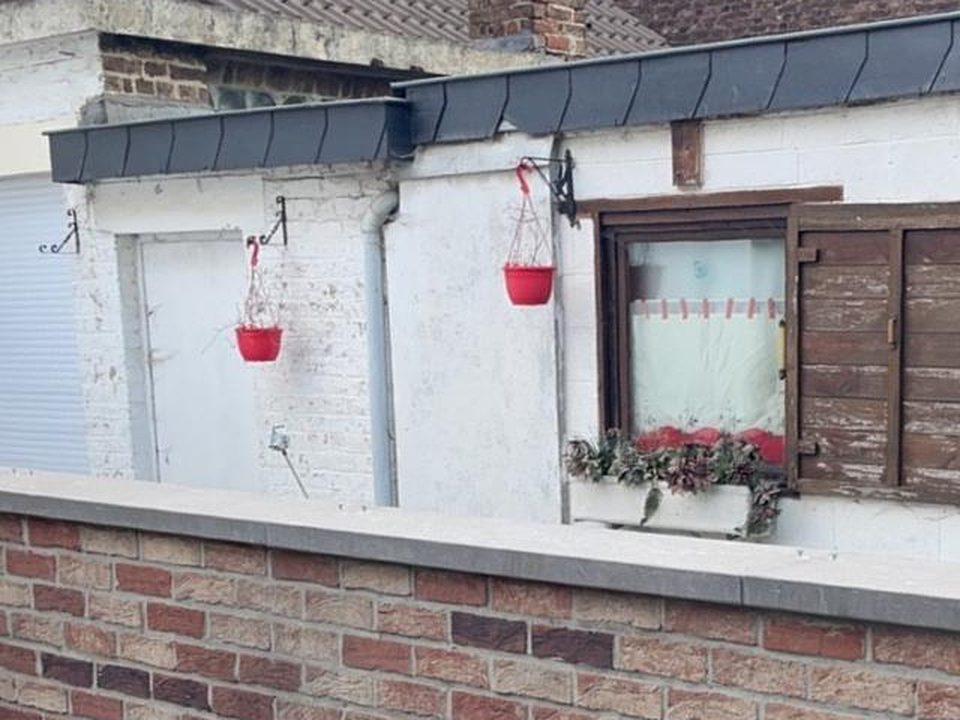
Avant AprèsUn simple muret devient une terrasse protégée : poteaux en inox et panneaux de verre dépoli, avec l'intimité en plus.
Je veux la même chose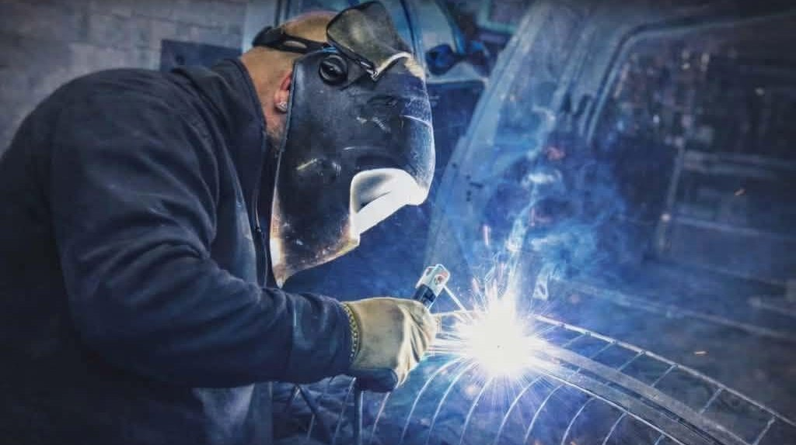
Alexandre Ventura, soudeur et patron
J'ai fondé Metalex après dix ans de métier comme soudeur-tuyauteur dans l'industrie. Aujourd'hui, je mets cette expérience au service de vos projets, du garde-corps de votre maison à la tuyauterie de votre usine.
J'ai travaillé sur des chantiers très variés : chaudronnerie, construction métallique, tuyauterie industrielle en acier et en inox. Je lis les plans, je prépare et j'assemble les pièces, et je soigne les soudures autant que les finitions. J'ai aussi été chef d'équipe, ce qui m'a appris à organiser un chantier et à tenir les délais.
Rigoureux et minutieux, je voulais créer quelque chose de concret et durable. Chez Metalex, c'est moi qui vous réponds, qui mesure, qui soude et qui pose.
- Expérience
- 10 ans de soudeur-tuyauteur, dont chef d'équipe
- Procédés
- TIG, MIG/MAG et arc · agréé TIG toutes positions
- Formation
- Soudeur, formé chez Technifutur
- Sécurité
- Certificat VCA et attestations de sécurité
- Sites industriels
- Passeports Prayon, ArcelorMittal et Aperam
Ils recommandent Metalex
Lire ou laisser un avisJ'ai récemment fait appel aux services de Metalex pour un portail et je suis très satisfait. Le travail a été réalisé parfaitement. La communication a été fluide du début à la fin. Le prix a été correct et respecté… et surtout le patron est super sympa ! Je recommande à 100 %.
Ce Monsieur est venu chez moi et a effectué un travail de qualité. Il est vraiment très sympathique en plus. Je recommande à 100 %. Je vous remercie vraiment.
Comment ça se passe
De votre première photo à la pose, quatre étapes et un seul interlocuteur : le patron sur chaque chantier, pas de sous-traitance.
-
Vous envoyez quelques photos
Sur WhatsApp, par e-mail ou au téléphone, avec les dimensions approximatives et l'idée que vous avez en tête.
-
On regarde le chantier
Si besoin, je passe prendre les mesures exactes. On choisit ensemble le métal, le motif et la finition.
-
Vous recevez le devis
Un prix détaillé et une date de réalisation. Vous décidez à votre rythme.
-
Fabrication et pose
Tout est fabriqué à l'atelier de Saint-Nicolas, puis posé chez vous. Les finitions sont faites sur place.
Questions fréquentes
Une autre question ? Le plus simple est de demander directement à Alexandre.
Travaillez-vous pour les particuliers ou pour les entreprises ?
Pour les deux. Chez les particuliers : garde-corps, rampes, portails, escaliers, réparations. Pour les entreprises : tuyauterie industrielle en acier et en inox, plateformes, supports et maintenance. Alexandre est certifié VCA et dispose des passeports d'accès Prayon, ArcelorMittal et Aperam.
Comment obtenir un devis ?
Envoyez quelques photos et des dimensions approximatives par WhatsApp, ou appelez le 0498 74 10 63. Si nécessaire, Alexandre passe prendre les mesures exactes, puis vous recevez un devis détaillé.
Où intervenez-vous ?
L'atelier se trouve à Saint-Nicolas (4420). Metalex intervient chez les particuliers et sur les sites industriels de la région liégeoise.
Quels métaux et quels procédés de soudure ?
Acier, inox et autres métaux, en soudure TIG, MIG/MAG et à l'arc. Alexandre est agréé TIG toutes positions.
Est-ce que vous posez vous-même ?
Oui. Chaque pièce est fabriquée à l'atelier puis posée chez vous par Alexandre, finitions comprises. Vous avez un seul interlocuteur du devis à la pose.
Pouvez-vous réparer ou modifier une pièce existante ?
Oui : réparations, renforts, modifications de portails, de rampes ou de structures métalliques. Envoyez une photo, c'est le plus rapide pour savoir ce qui est faisable.
Les derniers chantiers
Metalex publie ses chantiers en cours et terminés sur Facebook. Suivez la page pour les voir passer dans votre fil.
Fil d'actualité Metalex Soudure
Ce fil est fourni par Facebook. En l'affichant, vous acceptez que Facebook dépose ses cookies sur cet appareil. En savoir plus
Parlons de votre projet
Le plus rapide : appeler, ou envoyer quelques photos de ce qu'il faut faire. Devis gratuit, réponse personnelle.
0498 74 10 63 Écrire sur WhatsApp